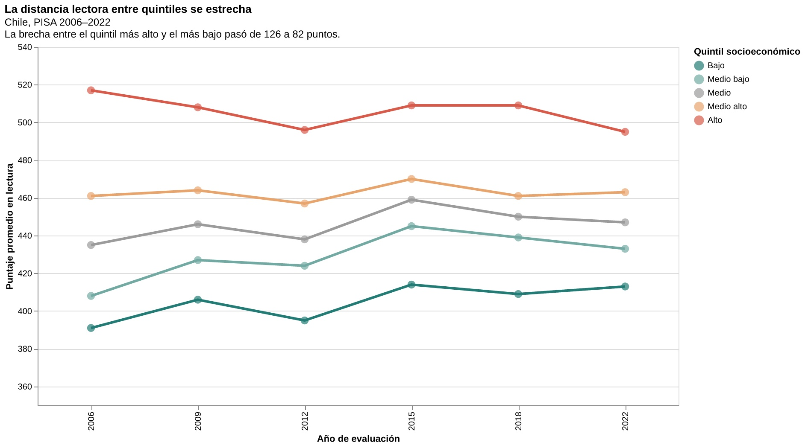
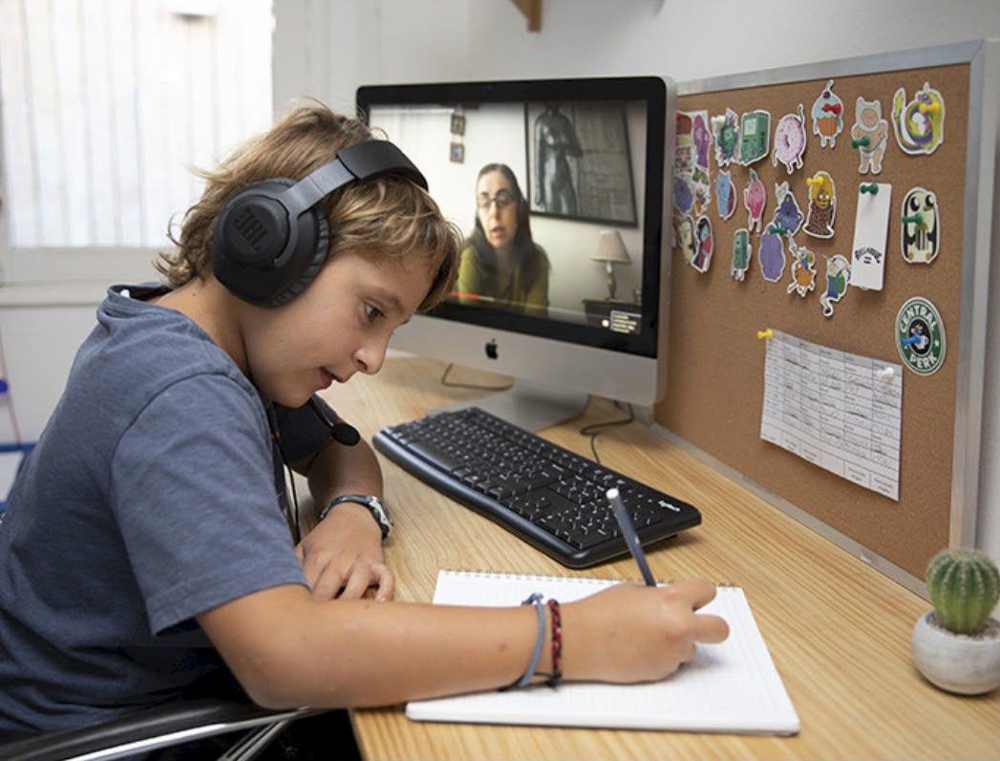

A primera vista, la cifra invita al optimismo: la distancia entre los estudiantes chilenos de mayores y menores recursos se ha reducido. Pero para entender lo que ocurrió con la comprensión lectora hay que mirar algo más que la diferencia entre dos grupos. Importa saber quién avanzó, quién retrocedió y qué estaba pasando en las escuelas cuando cambiaron los resultados.
Una brecha que venía de antes
Mucho antes de que se hablara de clases por videollamada, el origen socioeconómico ya estaba relacionado con los resultados de comprensión lectora. En PISA 2006, la diferencia entre el quintil de mayores recursos y el de menores recursos alcanzaba 126 puntos: 517 frente a 391.
En 2018, la distancia era de 100 puntos. Los estudiantes del quintil superior promediaban 509 y los del inferior, 409. Cuatro años después, en PISA 2022, esa separación había bajado a 82 puntos: 495 frente a 413.
La distancia lectora entre quintiles se estrecha
Chile, PISA 2006–2022. Puntaje promedio de lectura por quintil socioeconómico.

Fuente: base de datos PISA por quintiles socioeconómicos trabajada para el proyecto.
La reducción de la brecha puede parecer una señal alentadora. Pero mirar únicamente la distancia entre los extremos oculta parte de la historia: entre 2018 y 2022, el grupo de mayores recursos cayó 14 puntos, mientras que el de menores recursos subió cuatro. La diferencia disminuyó, en buena medida, porque quienes antes obtenían mejores resultados retrocedieron.
Esto no significa que las condiciones educativas de ambos grupos se hayan igualado. Una brecha más pequeña no equivale necesariamente a un sistema más justo ni a una mejora general del aprendizaje.
Cuando la escuela entró a las casas
En marzo de 2020, las salas de clases quedaron vacías. La educación se trasladó a los hogares y, por un tiempo, la posibilidad de seguir aprendiendo dependió también de una conexión a internet, un dispositivo disponible y un lugar donde concentrarse. El cierre de colegios afectó a estudiantes de establecimientos públicos y privados, pero no todos lo enfrentaron con los mismos recursos. Mientras algunas familias pudieron mantener rutinas y acompañamiento escolar, otras debieron compartir computadores o teléfonos y combinar las clases con las exigencias de la casa. La pandemia fue un punto de inflexión para toda una generación, aunque no explica por sí sola las diferencias de puntaje entre quintiles.

Los jóvenes que participaron en PISA 2025 tenían alrededor de nueve o diez años cuando comenzó el confinamiento: estaban en una etapa clave para consolidar la comprensión de textos, aunque ya habían iniciado el aprendizaje de la lectura. La interrupción escolar coincidió con esos años y sus efectos pueden ayudar a entender las dificultades de recuperación posteriores. También invita a mirar con cuidado la caída del quintil más favorecido entre 2018 y 2022: disponer de más recursos no volvió a esos estudiantes inmunes a las consecuencias de la crisis sanitaria. Sin embargo, los datos disponibles no permiten asegurar que la pandemia haya causado específicamente ese descenso, ni atribuir a un quintil el retroceso nacional de PISA 2025.
Lo que queda después del regreso
El retorno a las aulas no devolvió automáticamente los hábitos de estudio anteriores. Las pantallas, imprescindibles durante la educación remota, continuaron presentes en la vida cotidiana de los estudiantes. Su utilidad para aprender convive con notificaciones, contenidos breves y distracciones que pueden competir con la lectura sostenida. La llamada «crisis de la atención», junto con los aprendizajes interrumpidos durante la pandemia, ofrece un contexto para pensar el retroceso de algunos grupos, no una causa demostrada por PISA.
La pregunta de fondo no es solamente por qué se estrechó la distancia entre quintiles, sino cómo lograr que esa distancia disminuya porque todos comprenden mejor lo que leen.
Fuentes y metodología
Serie PISA de lectura por quintiles socioeconómicos de Chile (2006–2022), trabajada para el proyecto. Las comparaciones de 2018 y 2022 son descriptivas; los resultados nacionales de 2025 no se atribuyen a quintiles específicos.